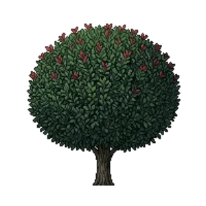

Gem Box Inkberry
Ilex glabra 'Gem Box'

Gem Box Inkberry is a shrub for edging, mid-border, structure, suited to full sun to partial shade and loam, sandy soil, acid soil or moist ground, flowering varies by climate.
| Type | Shrub |
|---|---|
| Mature height | 90 cm |
| Spread | 90 cm |
| Aspect | full sun to partial shade |
| Foliage | Evergreen |
| Hardiness | USDA 5b-9b |
| Pollinator-friendly | Yes |
| Pet-safe | Not confirmed |
Where to use it in a border
At around 90 cm, it sits best toward the back of a border, or on its own as a focal point with room around it. Give it about 90 cm of room to spread. It is hardy across USDA zones 5b to 9b, so check it suits your area before planting.
It appears in our lists of full sun, shade, sandy soil, acid soil, wet soil, evergreen plants.
Flowering through the year
Worth knowing
- Evergreen, so it keeps the border furnished through winter.
- It tolerates acid soil but dislikes shallow chalk.
- It tolerates a shaded, north-facing spot.
- Its flowers are valued by bees and other pollinators.
Good companions
Plants that share its conditions and style, chosen to complement its place in the border:
- Anna's Magic Ball Arborvitaeas a partner at the same level
- Arborvitae 'Hetz Midget'as a partner at the same level
- Danica Globe Arborvitaeas a partner at the same level
- Annual Vincato edge in front
- Arborvitae 'North Pole'for height behind it
- Dusty Millerto edge in front
Garden styles
Formal Foundation planting Modern Native
See Gem Box Inkberry set in a full border, with spacing and companions worked out for your own conditions, in Border Builder.